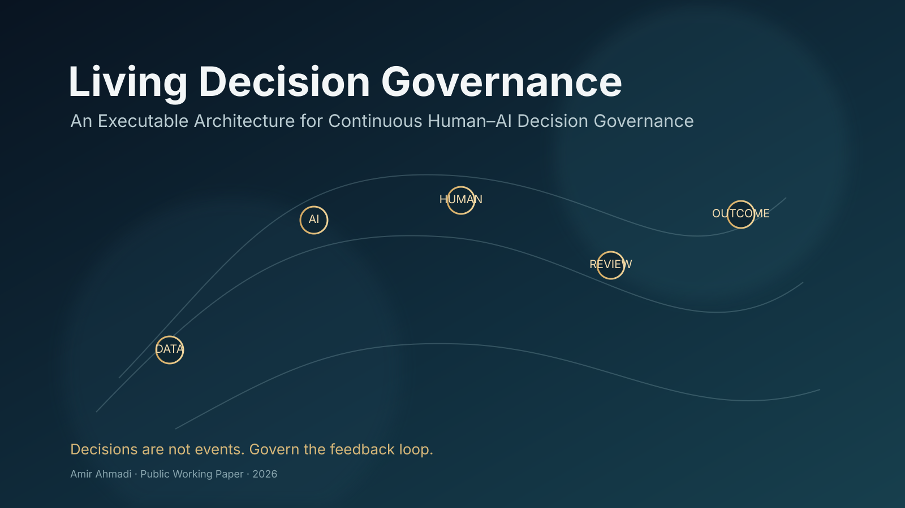
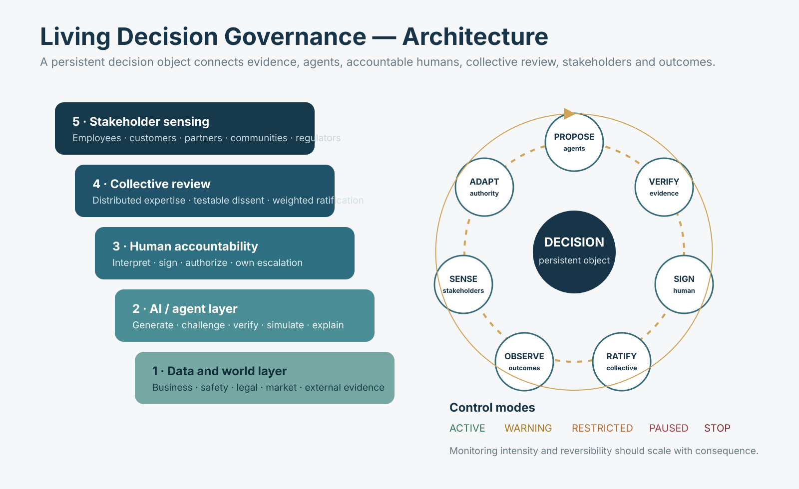

Living Decision Governance
An executable architecture for continuous human–AI decision governance. Decisions are treated as living, governed objects that remain observable, challengeable, signed, measurable, reversible where possible, and stoppable after deployment.
حکمرانی تصمیم زنده
یک معماری اجرایی برای حکمرانی پیوسته تصمیمهای انسان–هوش مصنوعی؛ تصمیم بهعنوان یک موجودیت زنده که پس از اجرا نیز قابل مشاهده، قابل اعتراض، امضاشده، قابل اندازهگیری، در صورت امکان برگشتپذیر و قابل توقف باقی میماند.

The decision is not an event.
LDG changes the unit of governance. The model, manager, policy and organization still matter — but the decision itself becomes a persistent object with a measurable lifecycle.
تصمیم یک رویداد نیست.
LDG واحد حکمرانی را تغییر میدهد. مدل، مدیر، سیاست و سازمان همچنان مهماند، اما خود تصمیم به یک موجودیت پایدار با چرخه عمر قابل اندازهگیری تبدیل میشود.

Origin of inquiry
The immediate trigger was a public observation by Christopher J. Skinner about enterprise AI's difficulty representing human thinking, communication, decision quality and leadership.
LDG explicitly records that post as an intellectual trigger, not as the source of the framework and not as empirical evidence. The architecture emerged by pushing the question further: what if the decision itself remains governable after it enters the world?
منشأ پرسش
جرقه مستقیم، مشاهده عمومی Christopher J. Skinner درباره ضعف AI سازمانی در بازنمایی تفکر انسان، ارتباط، کیفیت تصمیم و رهبری بود.
LDG این پست را صریحاً بهعنوان جرقه فکری ثبت میکند، نه منبع چارچوب و نه شاهد تجربی. معماری زمانی شکل گرفت که سؤال چند مرحله جلو رفت: اگر خود تصمیم پس از ورود به دنیای واقعی همچنان قابل حکمرانی بماند چه؟
Research integrity
v0.2 is a conceptual and executable working artifact. It does not claim empirical validation, universal safety, or formal novelty before deeper prior-art review.
Adjacent research is cited as related work, not retroactive inspiration.
یکپارچگی پژوهش
نسخه v0.2 یک آرتیفکت مفهومی و اجرایی است. هنوز ادعای اعتبارسنجی تجربی، ایمنی عمومی یا novelty رسمی پیش از prior-art review عمیقتر ندارد.
پژوهشهای نزدیک بهعنوان کارهای مجاور ثبت میشوند، نه «الهام گذشتهنگر».
Change the inputs. Challenge the decision.
This interactive miniature is not the research model itself. It mirrors the control idea so a reader can immediately see how a good business outcome can still lose authority when stakeholder harm or risk crosses a threshold.
ورودیها را تغییر بده؛ تصمیم را به چالش بکش.
این ابزار کوچک خود مدل پژوهشی نیست؛ منطق کنترل را قابل لمس میکند تا دیده شود حتی با نتیجه تجاری خوب، افت اعتماد ذینفع یا افزایش ریسک میتواند اختیار تصمیم را کاهش دهد.
Within expected bounds.
One understandable example
An AI customer-support rollout cuts response time and cost. The executive dashboard looks successful. But employee trust falls below its predefined floor. LDG does not call the whole project a failure — it changes the decision state, narrows authority, triggers review, tests corrective actions, and allows recovery if measured conditions improve.
یک مثال قابل فهم
یک سامانه پشتیبانی AI زمان پاسخ و هزینه را کم میکند و داشبورد مدیران موفقیت نشان میدهد. اما اعتماد کارکنان از حد ازپیشتعریفشده پایینتر میرود. LDG کل پروژه را فوراً شکستخورده اعلام نمیکند؛ وضعیت تصمیم را تغییر میدهد، اختیار را محدود میکند، بازبینی را فعال میکند، اصلاحات را میآزماید و در صورت بهبود قابل اندازهگیری اجازه بازیابی میدهد.